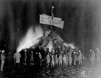
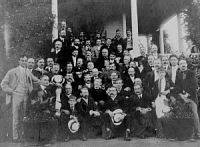
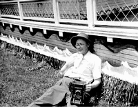
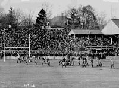

20th Century Photographers at Princeton

Orren Jack Turner arrived in Princeton in the early 1900s to work for the Princeton Branch of White Studios, a New York City establishment. In 1917 Turner bought out the branch, and remained in Princeton for the remainder of his life. He photographed many Princeton Borough and University events, including the Big Three Football Championship bonfires. In this photograph Princeton exults over a victory against Yale.

Edward C. Kopp, a Princeton resident had a photographic studio in the back of his bicycle shop. He took this photograph at Princeton Reunions of the Class of 1870. Woodrow Wilson is seated with some of his classmates on the porch of this house.

This photograph, of the interior steps of Nassau Hall, was taken by Elizabeth G. C. Menzies, one of the few known women photographers active in Princeton from the 1930s through to the 1950s.

Alan W. Richards came to work as a photographer at Princeton in the 1940s, and was active through the 1960s. Present at almost every University event, Richards' photographs in the University Archives document the life of the University community. A Newark News photographer snapped this shot of Richards after a long day of photographing Reunion activities in 1950.

Princeton athletic events were watched with great excitement and photographs were often published in local and national newspapers. This photograph of the 1912 Princeton versus Yale football game was shot by the photographic agency, Underwood & Underwood.
 Go to the next section of photographs.
Go to the next section of photographs.
Return to the Mudd Library home page.